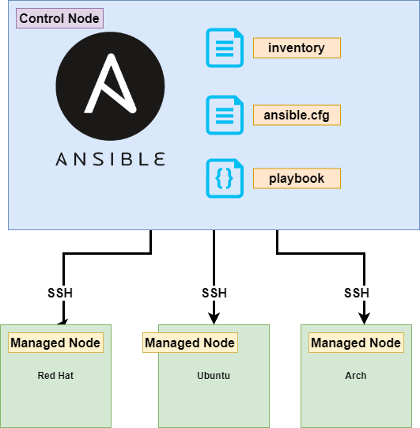

2. Ansible architecture
Ansible uses Master-Slave architecture, which means we have a Control Node, from where we are running the code, and Managed nodes where the code is run.
{kind=link}
A simplified explanation of how Ansible works
Inventory: Ansible maintains an inventory of all the nodes or servers that it manages. The inventory can be stored in a simple text file, or it can be a dynamic inventory that is generated by querying external systems such as cloud providers or other databases.
Playbooks: Ansible uses YAML files called “playbooks” to define the desired state of your infrastructure. Playbooks contain a series of tasks that should be executed on specific nodes. Each task specifies an action to be performed, such as installing a package, copying a file, or executing a command.
Modules: Ansible has a large collection of built-in “modules” that provide a wide range of functionality. Modules are used to perform tasks on the nodes, such as installing software, configuring services, or managing users. Modules can be written in any programming language and are executed on the nodes by Ansible.
SSH: Ansible communicates with the nodes over SSH by default, using the OpenSSH client. This means that no agent or daemon needs to be installed on the nodes, making it easy to manage heterogeneous environments.
Control Node: Ansible is installed and runs from a “control node” or a master machine that manages the infrastructure. The control node is responsible for running the playbooks, communicating with the nodes, and collecting and reporting the results.
When you run an Ansible playbook, it connects to the nodes in your inventory, checks their current state against the desired state specified in the playbook, and makes the necessary changes to bring them into compliance. Ansible uses an “idempotent” model, which means that if a task has already been executed and the desired state has been achieved, the task is skipped on subsequent runs.
Warning
But this idempotency disappears if you’re using the shell module.
What is SSH, baby don’t ping, don’t ping me, error
SSH (Secure Shell) is a protocol to securely connect to remote machines over an unsecured network. It is used to access remote servers and execute commands or perform tasks on them.
SSH provides a secure, encrypted communication channel between two computers. It allows users to authenticate themselves using a public-key cryptography mechanism and then provides them with secure, encrypted access to the remote machine’s shell or command-line interface.
There are two main versions of SSH: SSH1 and SSH2. SSH2 is the more modern and secure version and is widely used today. SSH2 supports a variety of authentication methods, including password authentication, public-key authentication, and host-based authentication.
Use cases for SSH include:
Remote access to servers: system administrators and developers remotely access servers and execute commands or perform tasks on them.
Secure file transfers: securely transfer files between machines using tools like SCP (Secure Copy) and SFTP (Secure File Transfer Protocol).
Tunneling: create encrypted tunnels between two machines, allowing secure communication between them, (in this way you can escape most of the proxies/firewalls from the companies)
Configuration files
Ansible supports several sources for configuring its behavior, including an ini file named ansible.cfg, environment variables, command-line options, playbook keywords, and variables.
- Changes can be made and used in a configuration file which will be searched for in the following order:
ANSIBLE_CONFIG (environment variable if set)
ansible.cfg(in the current directory)~/.ansible.cfg(in the home directory)/etc/ansible/ansible.cfg
Variable precedence
Variable precedence in Ansible determines the order in which variables are evaluated and assigned values. In other words, when multiple variables have the same name, Ansible follows a specific order to decide which variable’s value should be used.
The variable precedence order in Ansible is as follows (from lowest to highest precedence):
Role defaults: Variables defined in a role’s defaults/main.yml file.
Inventory variables: Variables defined in the inventory file, either globally or for a specific host or group.
Play variables: Variables defined in the vars section of a play.
Playbook variables: Variables defined in the vars section of a playbook.
Extra variables: Variables defined using the -e command line option.
Registered variables: Variables created using the register keyword in a task.
Set_facts variables: Variables created using the set_fact module or action.
Task variables: Variables created using the vars keyword in a task.
Block variables: Variables created using the block keyword in a task.
Role variables: Variables defined in a role’s vars/main.yml file.
Include variables: Variables defined in a file included using the include_vars module or action.
Warning
If multiple variables with the same name exist, the variable with the highest precedence takes precedence over the others. For example, if a variable is defined in both the inventory and playbook variables, the playbook variable takes precedence.
Stateful vs Stateless
Ansible and Puppet are two popular configuration management tools used to automate the management of IT infrastructure. One key difference between them is the architecture they use to manage the configuration of the target nodes.
Ansible follows a stateless architecture, while Puppet follows a stateful architecture.
Stateless Architecture
In a stateless architecture, the configuration management tool does not maintain any information about the state of the target nodes. Instead, it uses a push-based approach to apply the desired state to the target nodes. Ansible follows this approach.
In Ansible, the desired state of the target nodes is defined in the playbook. When the playbook is executed, Ansible pushes the configuration changes to the target nodes, without maintaining any information about their previous state. Each task in the playbook is executed independently, and there is no guarantee that the tasks will be executed in a particular order.
Stateful Architecture
In a stateful architecture, the configuration management tool maintains a persistent connection to the target nodes and continuously monitors their state. Puppet follows this approach.
In Puppet, the desired state of the target nodes is defined in a declarative language called Puppet DSL. Puppet continuously monitors the state of the target nodes, and if any configuration drift occurs, it applies the required changes to bring the node back to its desired state. Puppet uses a pull-based approach, where the target nodes periodically pull their configuration from the Puppet master.
Puppet maintains a database of the state of each target node and applies changes in a particular order, based on their dependencies. This approach provides greater control and predictability over the configuration changes, but it also requires more overhead and management of the Puppet master.